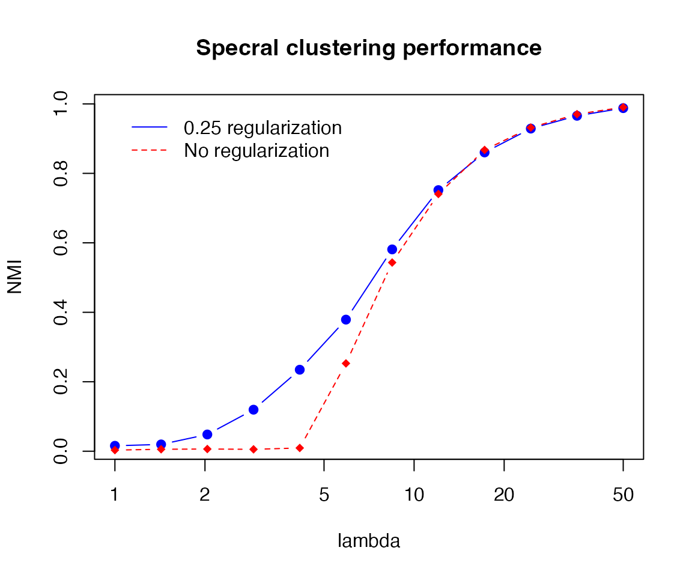

Community_Detection.Rmdlibrary(nett)
Let us sample a network from a DCSBM:
n = 1500 Ktru = 4 lambda = 15 # expected average degree oir = 0.1 pri = 1:Ktru set.seed(1234) theta <- EnvStats::rpareto(n, 2/3, 3) B = pp_conn(n, oir, lambda, pri=pri, theta)$B z = sample(Ktru, n, replace=T, prob=pri) # randomly smaple "true community labels" A = sample_dcsbm(z, B, theta) # sample the adjacency matrix
We can apply the (Laplacian-based) regularized spectral clustering for community detection:
zh = spec_clust(A, K=4)
We can evaluate the performance by computing the normalized mutual information (NMI) to a true label vector:
compute_mutual_info(z, zh) #> [1] 0.8459515
NMI is in \([0,1]\) and the closer to 1 it is the closer the mathc between the two labels.
Let us now consider the effect of the expected average degree \(\lambda\) on the performance of spectral clustering.
We first generate from a simple planted partition model, with connectivity matrix, \[B_1 \propto (1-\beta)I_{K}+ \beta\mathbf{1}\mathbf{1}^{T}\] where \(\beta\) is the out-in-ratio.
set.seed(1234) nrep = 20 nlam = 12 lamvec = 10^seq(log10(1), log10(50), length.out = nlam) # the vector of logarithmically spaced lambda runs = expand.grid(rep = 1:nrep, lambda = lamvec) res = do.call(rbind, lapply(1:nrow(runs), function(j) { lambda = runs[j,"lambda"] B = pp_conn(n, oir, lambda, pri=pri, theta)$B A = sample_dcsbm(z, B, theta) zh = spec_clust(A, K = Ktru) # defaults to tau = 0.25 for the regularization parameter zh_noreg = spec_clust(A, K = Ktru, tau = 0) data.frame(rep = runs[j,"rep"], lambda = lambda, nmi = compute_mutual_info(z, zh), nmi_noreg = compute_mutual_info(z, zh_noreg)) })) agg_nmi = aggregate(res, by = list(res$lambda), FUN = mean)
The resulting plot looks like this:
plot(agg_nmi$lambda, agg_nmi$nmi, log="x", type = "b", col = "blue", ylab = "NMI", xlab = "lambda", pch=19, main="Specral clustering performance") lines(agg_nmi$lambda, agg_nmi$nmi_noreg, col="red", lty=2, pch=18, type = "b") legend(1, 1, legend = c("0.25 regularization","No regularization"), col = c("blue","red"), lty=1:2, box.lty=0)

This shows that increasing \(\lambda\) makes the community detection problem easier.
Let us now generate the connectivity matrix randomly as follows \[B_2 \propto \gamma R + (1-\gamma) Q \] where
rsymperm()), andThe function gen_rand_conn() generates such connectivity matrices.
set.seed(1234) nrep = 20 nlam = 12 lamvec = 10^seq(log10(1), log10(200), length.out = nlam) # the vector of logarithmically spaced lambda runs = expand.grid(rep = 1:nrep, lambda = lamvec) res = do.call(rbind, lapply(1:nrow(runs), function(j) { lambda = runs[j,"lambda"] B = gen_rand_conn(n, Ktru, lambda = lambda, gamma = 0.1, pri=pri) A = sample_dcsbm(z, B, theta) zh = spec_clust(A, K = Ktru) # defaults to tau = 0.25 for the regularization parameter zh_noreg = spec_clust(A, K = Ktru, tau = 0) data.frame(rep = runs[j,"rep"], lambda = lambda, nmi = compute_mutual_info(z, zh), nmi_noreg = compute_mutual_info(z, zh_noreg)) })) agg_nmi = aggregate(res, by = list(res$lambda), FUN = mean)
The resulting plot looks like the following:
plot(agg_nmi$lambda, agg_nmi$nmi, log="x", type = "b", col = "blue", ylab = "NMI", xlab = "lambda", pch=19, main="Specral clustering performance") lines(agg_nmi$lambda, agg_nmi$nmi_noreg, col="red", lty=2, pch=18, type = "b") legend(1, max(agg_nmi$nmi), legend = c("0.25 regularization","No regularization"), col = c("blue","red"), lty=1:2, box.lty=0)
Comparing with the result for the simple planted partition, we see that the problem based on \(B_2\) is much harder for the spectral clustering. Note that the community structure of \(B_2\) is not necessarily assortative.